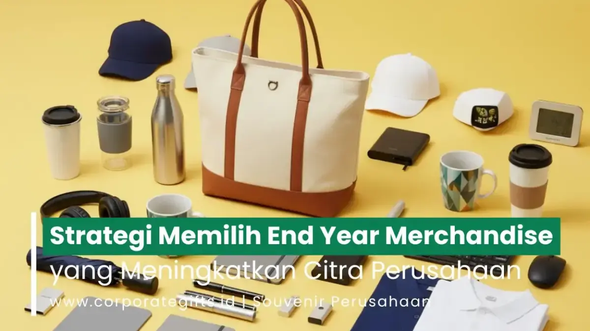

Corporate Gifts ID - Strategi memilih End Year Merchandise untuk citra perusahaan adalah menyesuaikan produk dengan tujuan dan segmen penerima, menyelaraskannya dengan identitas brand, memprioritaskan kualitas dan fungsi, menambahkan personalisasi, memilih vendor terpercaya, menetapkan budget bertingkat, serta menyertakan pesan brand. Dengan langkah terencana ini, hadiah akhir tahun menjadi instrumen komunikasi strategis yang memperkuat reputasi dan loyalitas, bukan sekadar formalitas tahunan.
Dalam dunia bisnis modern, hadiah akhir tahun adalah bentuk apresiasi sekaligus media komunikasi reputasi. Melalui End Year Merchandise, perusahaan dapat menampilkan kepribadian, profesionalisme, serta kepedulian tulus terhadap dedikasi karyawan dan loyalitas mitra bisnis.
Namun, banyak perusahaan masih memilih produk hanya berdasarkan harga murah atau tampilan luar semata tanpa mempertimbangkan relevansinya dengan nilai brand. Padahal, strategi pengadaan yang tepat menjadikan merchandise sebagai investasi relasional jangka panjang untuk mengukuhkan reputasi perusahaan di mata publik.
7 Pilar Strategi End Year Merchandise:
- Segmentasi Penerima: Bedakan merchandise karyawan internal dengan gift set relasi bisnis eksternal.
- Penyelarasan Nilai Brand: Pastikan material dan konsep kemasan mencerminkan identitas korporat.
- Kualitas dan Utilitas: Utamakan barang fungsional bermutu tinggi yang dipakai dalam rutinitas harian.
- Personalisasi Emosional: Sematkan grafir nama, pesan motivasi pimpinan, dan kemasan edisi terbatas.
- Kredibilitas Vendor: Pilih partner produksi dengan jaminan proofing desain dan SLA ketepatan waktu.
- Budget Tiered Gifting: Terapkan alokasi anggaran berjenjang agar biaya optimal dan tepat sasaran.
- Storytelling Brand: Sertakan kartu ucapan reflektif dan QR code menuju video apresiasi akhir tahun.
1. Pahami Tujuan dan Segmentasi Penerima End Year Merchandise
Langkah pertama yang paling fundamental adalah memahami siapa penerima hadiah dan apa objektif utama di balik pemberiannya. Profil penerima yang berbeda menuntut karakteristik merchandise yang berbeda pula:
- Untuk karyawan internal: Pilih merchandise yang menghadirkan kenyamanan, rasa memiliki, dan penghargaan atas performa kerja, seperti planner tahun baru personalisasi, jaket hoodie eksklusif, atau tumbler stainless steel premium.
- Untuk klien dan mitra bisnis VIP: Pilih produk yang memancarkan reputasi elegan dan profesionalisme tingkat tinggi, seperti gift box hardbox mewah, custom leather pouch, atau wireless tech merchandise premium.
Dengan segmentasi yang terarah, Anda dapat menghadirkan End Year Merchandise yang Unik dan Berkesan untuk Karyawan sekaligus menjaga kemitraan strategis dengan para pemangku kepentingan eksternal.
2. Selaraskan Merchandise dengan Nilai dan Identitas Brand
Merchandise yang sukses harus mampu menjadi cerminan nyata dari karakter perusahaan Anda. Pemilihan palet warna, siluet desain, hingga material kemasan merupakan representasi langsung citra bisnis di mata penerima:
- Brand berorientasi keberlanjutan (ESG): Pilih tas daur ulang bersertifikasi, buku catatan berbahan kertas daur ulang, atau cutlery set wheat straw ramah lingkungan.
- Brand berorientasi kemewahan dan prestise: Pilih pulpen logam dengan grafir laser presisi, agenda bersampul kulit sintetis mewah, atau aksesori beraksen metalik elegan.
Merchandise akhir tahun berfungsi layaknya perpanjangan identitas visual (brand extension) yang mengomunikasikan standar keunggulan korporat secara non-verbal.
3. Prioritaskan Kualitas dan Fungsionalitas Produk
Salah satu jebakan terbesar dalam pengadaan akhir tahun adalah mengorbankan kualitas produk demi mengejar kuantitas semata. Merchandise bermutu tinggi memiliki masa pakai bertahun-tahun, sehingga identitas brand Anda tetap terpapar secara berulang tanpa kesan memaksakan promosi:
- Wireless charger dan powerbank fast charging: Sangat relevan untuk mobilitas profesional modern.
- Tumbler insulated stainless SUS304: Menjaga suhu minuman berjam-jam, stylish, dan mendukung gaya hidup sehat.
- Desk organizer set eksklusif: Membantu merapikan meja kerja sekaligus mempercantik ruang kerja harian.
Item yang benar-benar berguna mencerminkan rasa hormat dan perhatian tulus perusahaan terhadap kebutuhan nyata penerimanya.

Penyelarasan merchandise akhir tahun dengan nilai brand dan tiered gifting.
4. Gunakan Personalisasi untuk Meningkatkan Nilai Emosional
Tuntutan terhadap End Year Merchandise Custom terus mengalami peningkatan pesat. Sentuhan personalisasi menciptakan koneksi emosional yang jauh lebih dalam, mengubah hadiah dari sekadar barang massal menjadi memorabilia personal:
- Menyertakan nama penerima yang diukir laser pada tumbler atau disematkan pada cover agenda.
- Menyisipkan pesan apresiasi tertulis yang ditandatangani jajaran pimpinan direksi.
- Menggunakan kemasan hardbox kustom dengan sleeve berdesain tematik akhir tahun.
Teknik branding yang subtle (halus) dan elegan jauh lebih diapresiasi ketimbang mencetak logo berukuran mencolok yang mengurangi nilai estetika barang.
5. Pilih Vendor dan Supplier Merchandise yang Terpercaya
Kredibilitas mitra vendor menjadi faktor penentu apakah realisasi fisik paket sesuai dengan ekspektasi desain. Pastikan Anda berkolaborasi dengan vendor pengadaan corporate gift yang:
- Memiliki rekam jejak portofolio proyek pengadaan B2B yang solid dan transparan.
- Menyediakan layanan konsultasi desain dan pembuatan mockup visual digital gratis sebelum produksi massal.
- Memberikan jaminan standar mutu bahan baku, ketepatan jadwal pengiriman (SLA), dan transparansi garansi retur jika terjadi cacat produksi.
Mitra terpercaya seperti CorporateGifts.ID siap mendampingi setiap tahap pengadaan, mulai dari kurasi produk hingga distribusi logistik ke seluruh Indonesia.
6. Tentukan Budget dengan Pendekatan Tiered Gifting
Besaran anggaran mencerminkan skala prioritas relasi bisnis. Agar alokasi anggaran tetap efisien namun menghasilkan dampak maksimal, terapkan pendekatan tiered gifting (pemberian berjenjang):
| Tier Kategori Penerima | Rekomendasi Paket Merchandise | Target Dampak & Kesan |
|---|---|---|
| Tier 1: Karyawan Internal | Planner kerja, tumbler custom nama, hoodie kantor | Meningkatkan rasa bangga, keterikatan tim, dan loyalitas kerja. |
| Tier 2: Klien & Vendor Reguler | Gift set stationery hardcover, mug keramik, kartu ucapan | Mempererat relasi kolaborasi dan menjaga komunikasi bisnis berkala. |
| Tier 3: Mitra Strategis VIP | Executive leather gift set, audio tech TWS, hardbox premium | Menegaskan komitmen kemitraan jangka panjang dan prestise korporat. |
Pendekatan berjenjang ini memastikan setiap rupiah yang diinvestasikan memberikan hasil optimal tanpa membebani neraca anggaran tahunan perusahaan.
7. Tambahkan Cerita dan Pesan Brand
Hadiah tanpa narasi akan kehilangan separuh kekuatannya. Selipkan kartu ucapan refleksi akhir tahun yang merangkum pencapaian bersama, rasa terima kasih mendalam, dan optimisme menyongsong lembaran tahun baru.
Anda juga dapat menyematkan kode QR interaktif pada kemasan untuk mengarahkan penerima ke halaman landing page khusus berisi video ucapan pimpinan atau laporan kilas balik tahunan. Sentuhan digital ini menciptakan pengalaman unboxing yang sangat berkesan dan modern.
Pertanyaan Seputar Strategi End Year Merchandise (FAQ)
Kesimpulan: Bangun Reputasi Positif Lewat Merchandise Akhir Tahun
Memilih End Year Merchandise bukan sekadar urusan membeli barang dalam jumlah banyak. Harmonisasi antara desain yang elegan, mutu material yang andal, sentuhan personalisasi, serta pesan brand yang bermakna adalah formula utama dalam menciptakan impresi tak terlupakan.
Dengan perencanaan matang sejak awal kuartal keempat, merchandise akhir tahun akan bertransformasi menjadi katalisator yang memperkuat loyalitas karyawan dan memantapkan kepercayaan klien bisnis.
Jelajahi beragam paket merchandise korporat dan hampers akhir tahun siap custom logo di katalog CorporateGifts.ID, atau diskusikan kebutuhan unik perusahaan Anda bersama tim konsultan kami.

Ditulis oleh: Arinda Zakia
Senior Corporate Gifting SpecialistSpesialis kurasi merchandise dan souvenir korporat di CorporateGifts.ID. Berpengalaman lebih dari 7 tahun dalam menyusun paket corporate gift fungsional untuk instansi BUMN, kementerian, perbankan, dan perusahaan multinasional.
Lihat Profil Lengkap & Panduan Lainnya